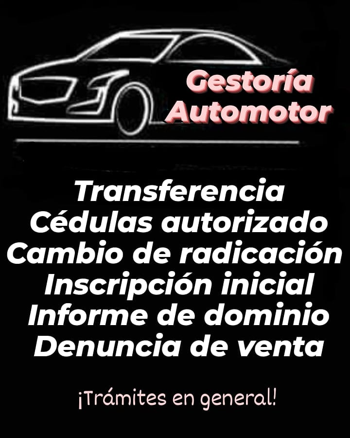

Brindamos asesoramiento profesional para tus trámites automotores, ahorrando tu tiempo, evitando errores que sean observados, teniendo tu automotor de forma segura sin riesgo jurídico y cuidando tu dinero.

Trámites
Alta y baja de motor - Baja por robo o hurto - Cambio de radicación - Cambio de tipo - Cédulas de autorizado - Certificado de dominio - Denuncia de posesión y tenencia - Denuncia de venta - Duplicado de cédulas, chapas, título - Informes - Inscripción 0km- Transferencias - Turnos Verificación Policial
Trámites en general.